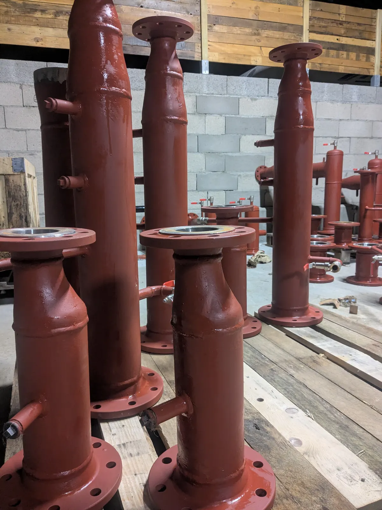
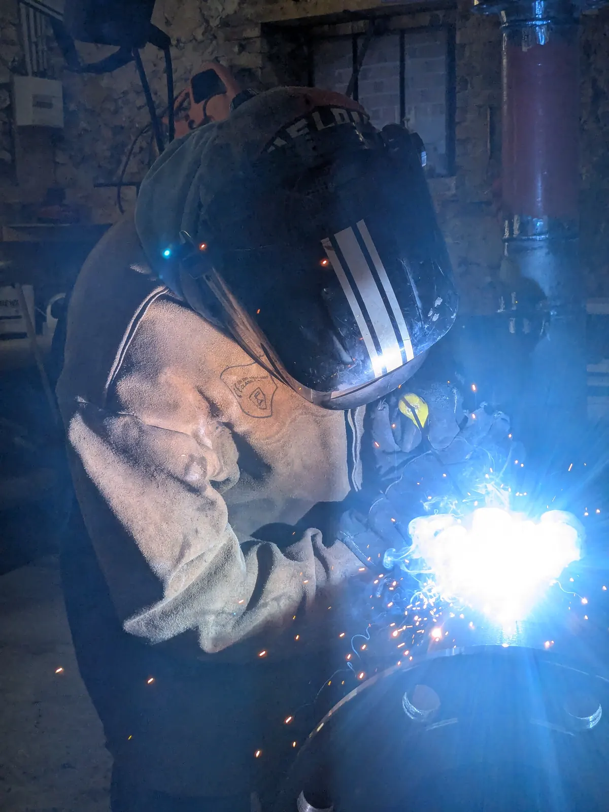
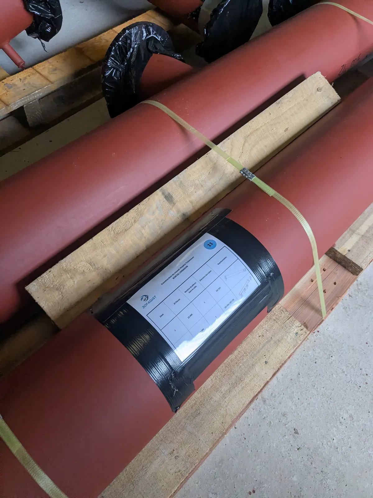

La préfabrication de tuyauterie industrielle est une méthode de plus en plus adoptée par les bureaux d'études, les entreprises générales de tuyauterie et les industriels. Elle consiste à fabriquer en atelier des sous-ensembles de tuyauterie, aussi appelés spools, qui seront ensuite livrés et assemblés directement sur site. Cette approche, au cœur du savoir-faire de JOFAGIST, transforme profondément l'organisation des chantiers industriels.

Qu'est-ce que la préfabrication de tuyauterie industrielle ?
La préfabrication (ou prefabrication) de tuyauterie désigne la fabrication hors site, en atelier contrôlé, de portions de réseaux de tuyauterie. Ces portions, appelées spools ou sous-ensembles, sont fabriquées à partir de plans, de fiches techniques ou de maquettes 3D.
Concrètement, le processus comprend : la découpe des tubes, le cintrage, le chanfreinage, l'assemblage par soudage ou boulonnage, et les contrôles qualité. Les spools sont ensuite expédiés vers le site d'installation, où ils sont assemblés entre eux et raccordés aux équipements.
Cette méthode s'oppose à la fabrication traditionnelle sur chantier, où toutes ces opérations sont réalisées directement sur le site d'installation, avec toutes les contraintes que cela implique (accès difficile, conditions météo, sécurité, coordination d'autres corps de métier).
Pourquoi choisir la préfabrication de tuyauterie ?
Les avantages de la préfabrication de tuyauterie industrielle sont nombreux et concrets. Voici les principaux :
1. Réduction significative des délais de chantier
La préfabrication permet de travailler en parallèle du génie civil et du montage des équipements. Pendant que les structures porteuses sont en cours de construction sur le site, les spools de tuyauterie sont fabriqués en atelier. Cette approche de fast-track peut réduire la durée totale d'un projet de 20 à 40 %.
2. Un environnement de travail maîtrisé
En atelier, les conditions de travail sont optimales : éclairage adéquat, outils adaptés, postures de travail correctes. Le soudeur n'est pas contraint de souder en position difficile ou sous des conditions climatiques défavorables. Les contrôles qualité sont réalisés au fil de la fabrication, par étape, ce qui permet de détecter et de corriger les défauts au plus tôt.
3. Amélioration de la sécurité
Les chantiers industriels sont par nature des environnements à risques. En déportant une grande partie des opérations de soudage et d'assemblage en atelier, on réduit le nombre d'heures de travail en hauteur, en espace confiné ou à proximité d'installations en service. Cela se traduit directement par une amélioration du bilan sécurité du projet.
4. Maîtrise des coûts
La productivité en atelier est généralement bien supérieure à celle sur chantier. Un soudeur en atelier peut produire 30 à 50 % de soudures de plus par journée qu'un soudeur sur chantier dans des conditions identiques. De plus, la réduction des temps de chantier diminue les coûts liés aux infrastructures temporaires (installations de chantier, supervisions, etc.).
5. Traçabilité complète
En atelier, chaque opération est tracée : certificats de matériaux, procédures de soudage, registres de contrôle. Le dossier de fabrication complet accompagne chaque livraison, ce qui facilite la réception des installations et leur suivi en service.

Les matériaux utilisés en préfabrication de tuyauterie
JOFAGIST maîtrise la fabrication sur tous les matériaux courants en tuyauterie industrielle :
- Acier : le matériau le plus courant en tuyauterie industrielle. Utilisé pour les réseaux de vapeur, eau, air comprimé, hydrocarbures.
- Inox : pour les applications alimentaires, pharmaceutiques, chimiques et à haute température.
- Cuivre : pour les réseaux frigorifiques, la distribution de gaz médicaux, les échangeurs thermiques.
- PVC : pour les fluides corrosifs et les applications chimiques.
Le processus de préfabrication chez JOFAGIST
Chez JOFAGIST, chaque commande de préfabrication de tuyauterie industrielle suit un processus rigoureux :
- Réception et analyse des documents techniques : plans, fiches techniques, maquettes 3D, cahier des charges.
- Approvisionnement des matériaux certifiés : tubes, raccords, brides, robinetterie, avec vérification des certificats matière.
- Débit et préparation : découpe précise des tubes par scie à ruban ou plasma, cintrage à froid, chanfreinage.
- Assemblage et soudage : pointage puis soudage, réalisé dans des conditions optimales de contrôle.
- Contrôles : contrôle visuel et dimensionnel systématique.
- Épreuve hydraulique si requise par les spécifications ou les réglementations applicables.
- Traitement de surface : sablage, métallisation, peinture, passivation ou décapage selon les exigences.
- Conditionnement et expédition : protection des extrémités, étiquetage de traçabilité, livraison sur site.
Pour quels secteurs industriels ?
La préfabrication de tuyauterie concerne de nombreux secteurs industriels :
- Énergie et utilities : centrales thermiques, réseaux de chaleur urbains (RCU), géothermie, biomasse, solaire thermique.
- Chimie et pétrochimie : raffineries, usines de traitement, ateliers de synthèse.
- Agroalimentaire : laiteries, sucreries, brasseries, conserveries, réseaux vapeur, eau chaude, utilities.
- Pharmacie et biotechnologie : tuyauteries haute pureté, inox électropoli, systèmes WFI (Water For Injection).
- Traitement des eaux : stations d'épuration, usines de production d'eau potable.
- Papier et carton : circuits de vapeur, condensats, fluides de production.

JOFAGIST, votre partenaire en préfabrication de tuyauterie
Basé en Centre-Val-de-Loire, JOFAGIST intervient pour des clients de toute la France métropolitaine. Notre atelier de préfabrication est équipé pour réaliser des spools sur tous les matériaux courants.
Nous travaillons aussi bien avec des bureaux d'études qui nous transmettent des plans complets ou des maquettes 3D (Revit), qu'avec des donneurs d'ordre qui nous confient l'étude à partir de plans d'ensemble ou de schémas PID.
Vous avez un projet de tuyauterie industrielle ? Transmettez-nous vos plans et spécifications pour recevoir un chiffrage détaillé sous 48h.
Un projet de tuyauterie industrielle ?
Devis gratuit sous 48h. Nous étudions vos plans et vous proposons une solution adaptée.